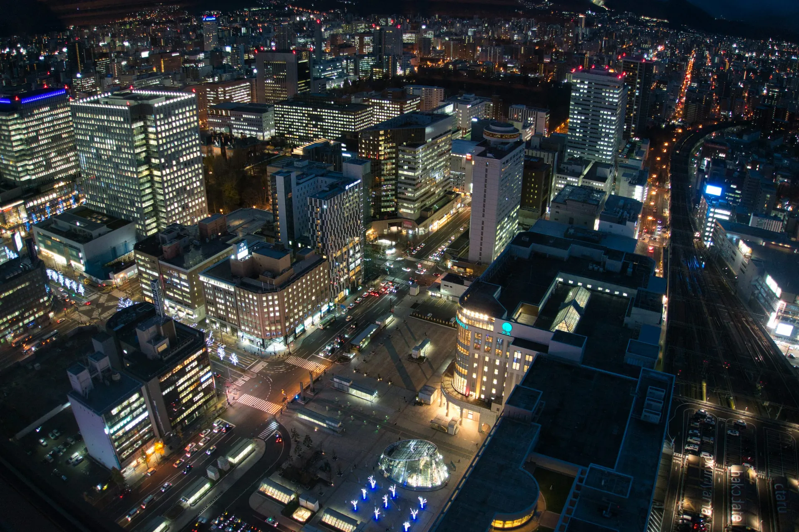
北の余白
— Hokkaido Journey
新千歳空港に降り立つ瞬間から、札幌の夜、富良野と美瑛の丘、小樽の運河、余市の海風まで。三日間だけの、短くて濃い北海道の記録。
Journal 01
三日間だけの、小さな北海道一周
今回の旅は、札幌を起点に富良野・美瑛・北広島を抜け、小樽に一泊、最終日に余市へ足を延ばして札幌から帰るという、欲張らない三日間のルートです。
観光の合間には、地元の寿司屋や市場、海辺のベーカリーなど、旅程には入れきれなかった「気になる場所」も番外編としてまとめています。
Route
このサイトでは、日ごとの旅程のほかに、番外編のスポット、巡るエリアの歴史や雑学、新千歳空港で買えるおみやげ、そして旅の地図をまとめています。
Explore
このサイトでできること
Itinerary
三日間の旅程
2026年10月21日(水)〜23日(金)。札幌を起点に、富良野・美瑛・北広島を抜けて小樽へ、最終日は余市を巡って札幌から帰路につきます。
- 16:40新千歳空港 着到着後、車で札幌市内へ移動。
- —ルートイン札幌中央 チェックインこの日の宿へ。
- 20:15夕食:ジンギスカン マルタケ札幌での最初の一食は、定番のジンギスカンで。
- —札幌泊一日目はここまで。
翌日は、丘を越えて小樽へ。
- —札幌 発この日は長距離の移動日。
- —富良野丘陵地帯を抜けながら観光。
- —美瑛パッチワークの丘を眺めながら。
- —北広島経由して小樽方面へ。
- —小樽グランベルホテル チェックインこの日の宿へ。
- 17:15
–19:00夕食:伊勢鮨予約番号 #8288。小樽の寿司を堪能。 - —小樽泊二日目はここまで。
翌日は、小樽の街と余市の海を巡って札幌へ。
- —小樽運河沿いの街並みを散策。
- —余市 方面ワイナリーや海沿いのスポットを巡る。
- 20:50札幌 発帰路につく。三日間の旅はここで一区切り。
旅程に入れきれなかった場所は、番外編で紹介しています。
Extras
番外編 — 気になるスポット
今回の旅程には入れきれなかったけれど、気になっている場所を5つ。日時は決めず、行けたら寄りたいリストです。
小樽 · 寿司
おたる政寿司
創業80年以上、小樽を「寿司の街」たらしめた老舗。小樽を代表する一軒として知られています。
公式サイトを見る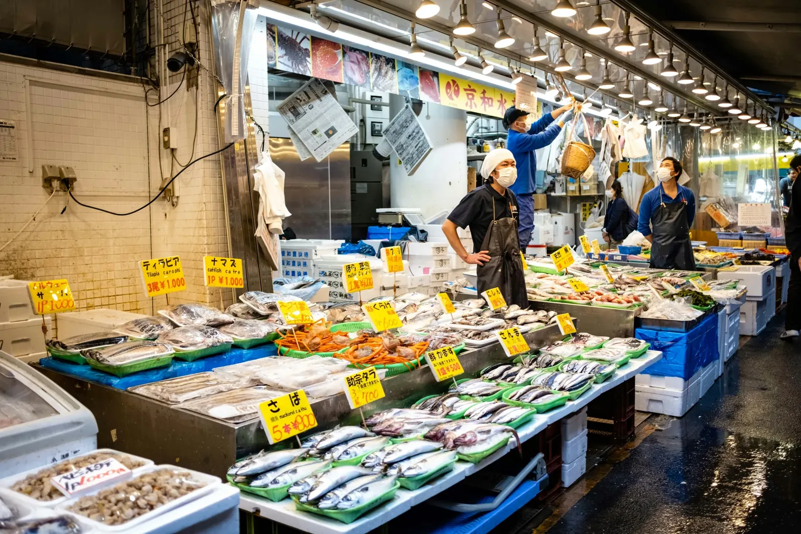
小樽 · 市場
南樽市場
小樽市新富町にある、地元の人が日常使いする市場。鮮魚店を中心に約30店舗が並ぶ「市民の台所」。
公式サイトを見る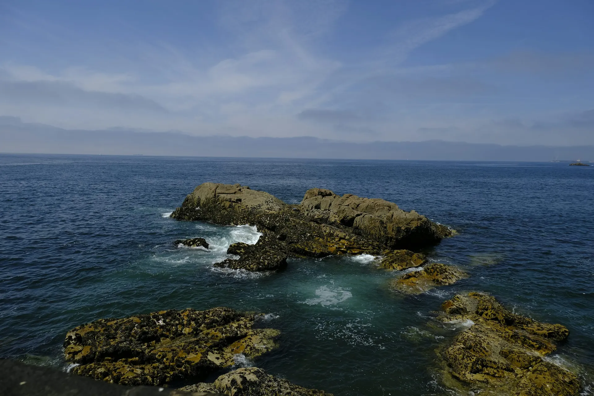
余市 · 絶景
えびす岩
余市町白岩町にある奇岩。七福神の「えびす様」に似た姿から名付けられた、朝夕が特に美しいスポット。
余市町の紹介を見る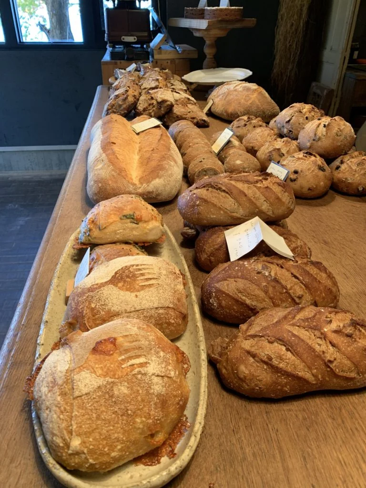
小樽・忍路 · ベーカリー
エグ・ヴィヴ(Aigues Vives)
小樽市忍路の海辺にあるフレンチベーカリー。薪火オーブンで焼く本格的なバゲットとペストリーが評判。
紹介ページを見る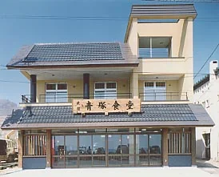
小樽・祝津 · 食堂
小樽青塚食堂
小樽市祝津、地元の漁師とつながりの深い海鮮食堂。水揚げされたばかりの海の幸をその場で味わえます。
公式サイトを見る※ 写真はいずれもイメージです。実際の店舗・スポットの写真ではありません。リンク先は各施設の公式サイトまたは自治体の紹介ページです。
About the Land
北海道について
今回巡る7つの土地、それぞれの歴史とちょっとした雑学。旅の前に読むと、景色の見え方が少し変わるかもしれません。
01 — Hokkaido
北海道
かつてアイヌ民族が独自の文化を育んできた土地で、その文化は今も受け継がれています。1869年(明治2年)、開拓使の設置とともに「北海道」の名が定められ、屯田兵制度や札幌農学校の設立を通じて、近代の開拓が進みました。
02 — Sapporo
札幌
開拓期の都市計画によって生まれた、碁盤目状の街区が特徴です。大通公園や時計台には、その頃の記憶が今も残ります。さっぽろ雪まつりは1950年、大通公園で始まりました。
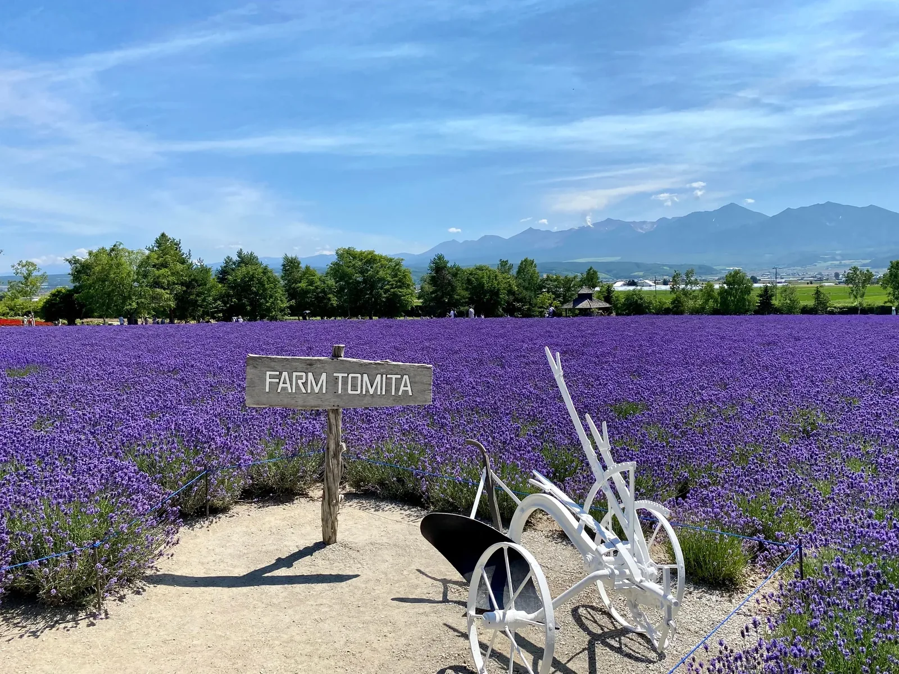
03 — Furano
富良野
夏に咲き誇るラベンダー畑で知られるエリア。テレビドラマ「北の国から」の舞台としても有名で、ロケ地を巡る旅も人気です。
04 — Biei
美瑛
季節ごとに表情を変える畑の風景から「パッチワークの丘」と呼ばれます。神秘的な色をたたえる「青い池」も、このエリアの見どころのひとつです。
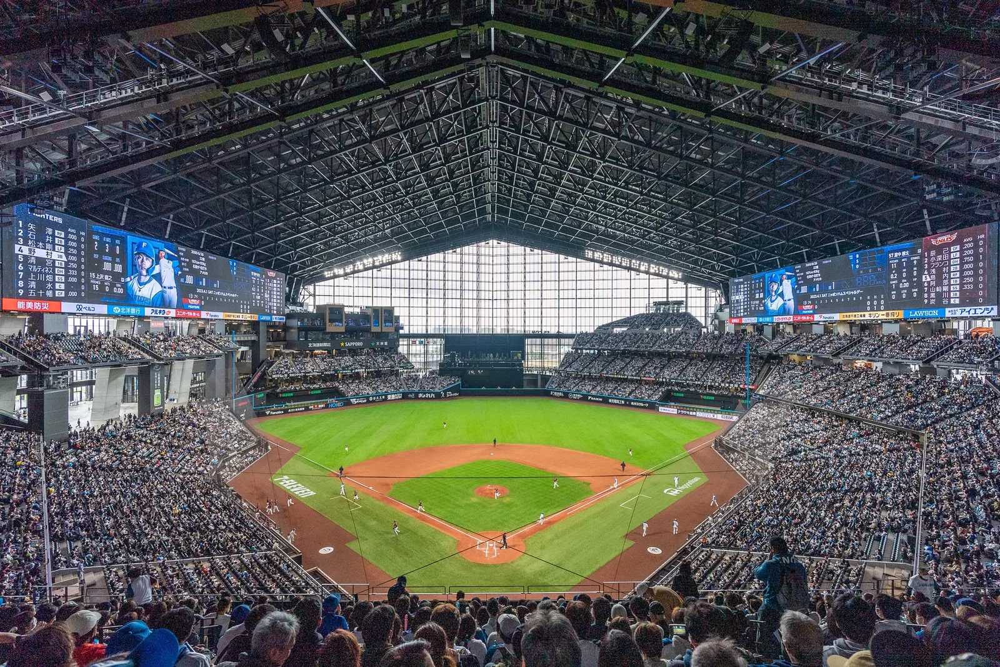
05 — Kitahiroshima
北広島
明治時代、広島県からの入植者が切り拓いたことが地名の由来です。近年は、プロ野球球団の新本拠地を中心とした新しいエリア開発でも注目を集めています。
06 — Otaru
小樽
ニシン漁と港の交易で栄えた街で、大正期に建てられた金融街の建物が今も残ります。大正12年完成の小樽運河と石造倉庫群は、小樽を象徴する景観。ガラス工芸の街としても知られています。
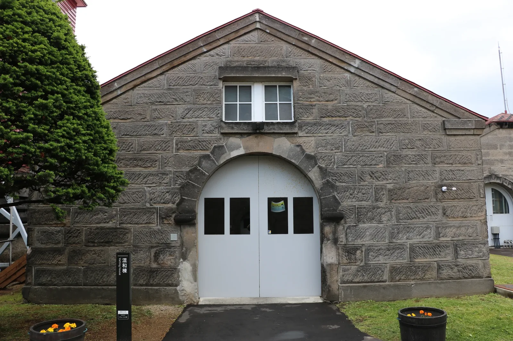
07 — Yoichi
余市
1934年創業のニッカウヰスキー余市蒸溜所があることで知られる町。近年はワイン用ぶどうの栽培も広がり、ワイナリーの町としても注目されています。
Souvenir
おみやげ
新千歳空港で買える北海道みやげの中から、いくつか抜粋して紹介します。詳しくは出典元の記事もあわせてご覧ください。
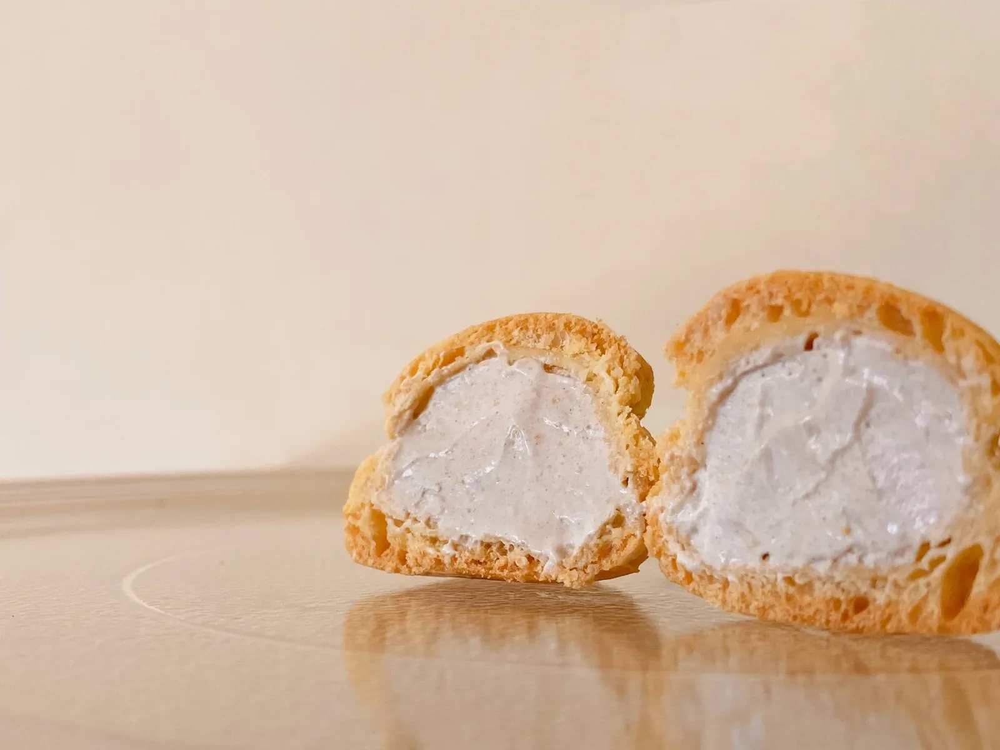
空港限定
スナッフルス 焼きたてオリジナルシュー
注文後に仕上げる焼きたてのシュー生地に、北海道産の生クリームとカスタードをたっぷり合わせた一品。
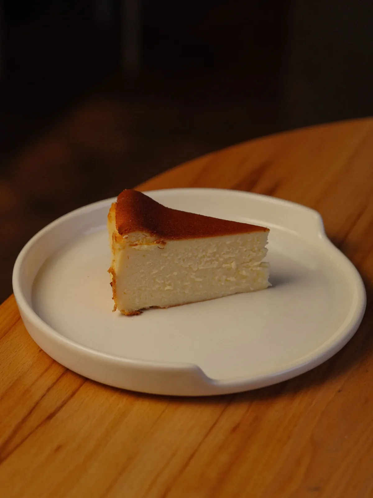
空港限定
札幌農学校 焼きたて酪農チーズケーキ
北海道産の牛乳・クリームチーズ・卵を使った焼き菓子。焼きたてと、冷やしたあとの味の変化も楽しめます。
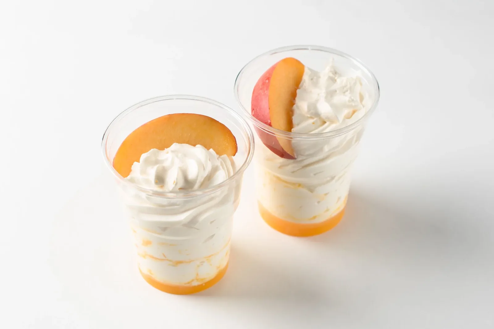
空港限定フレーバー
みれい菓 札幌カタラーナ 白桃マスカルポーネ
濃厚な生クリームに、白桃とマスカルポーネを重ねた冷たいデザート。見た目も華やかな一品。
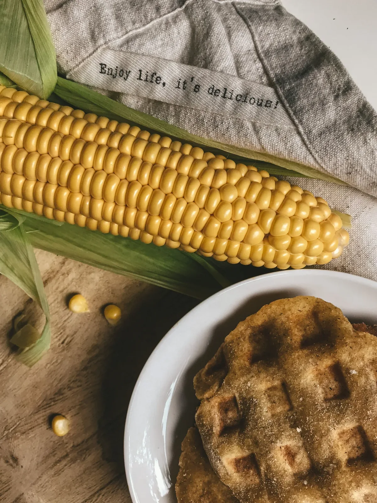
ご当地
美瑛選果 びえいのコーンぱん
美瑛産のスイートコーンを粒ごと練り込んだ名物パン。噛むたびに甘い果汁がはじけます。
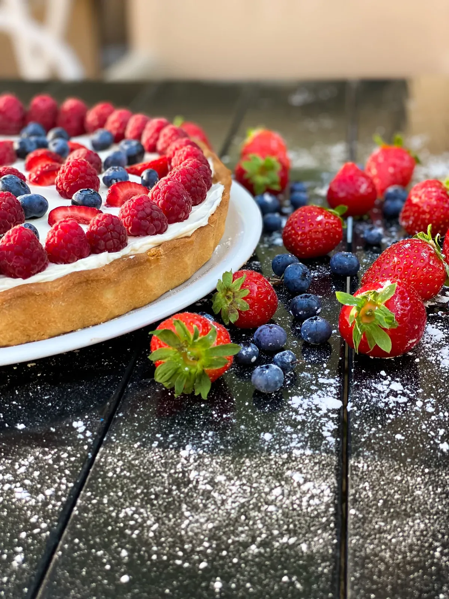
空港限定パッケージ
もりもと ハスカップジュエリー トリオ
北海道産ハスカップのジャムを、バター香るサブレとチョコレートで包んだ、三種の味のギフト。
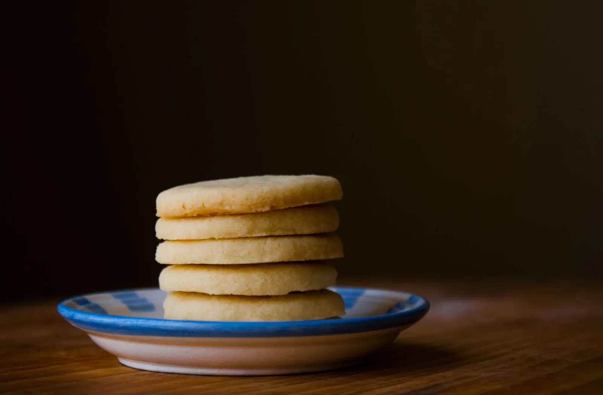
定番
札幌農学校 北海道ミルククッキー
北海道産の小麦・バター・ミルクの風味を活かした、軽い口当たりの焼き菓子。
王道
石屋製菓 白い恋人 ホワイト&ブラック
ラング・ド・シャクッキーに、ホワイトとブラック、2種のチョコレートを合わせた北海道銘菓の代表格。
掲載している写真はイメージで、実際の商品写真ではありません。価格・販売状況は変わることがあります。
もっと見る(出典:Web éclat)Map
旅のはじまり、新千歳空港
すべての旅程は、ここから始まります。地図で位置を確認しながら、ルートをイメージしてみてください。
Route overview
それぞれの地名をGoogleマップで個別に検索すると、位置関係がより分かりやすくなります。